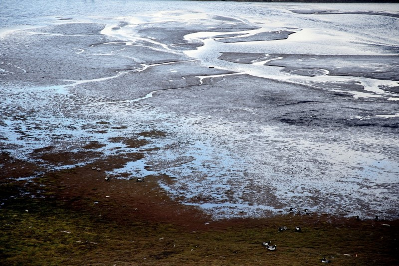
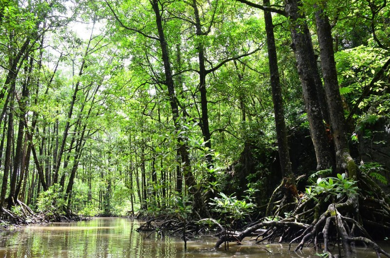
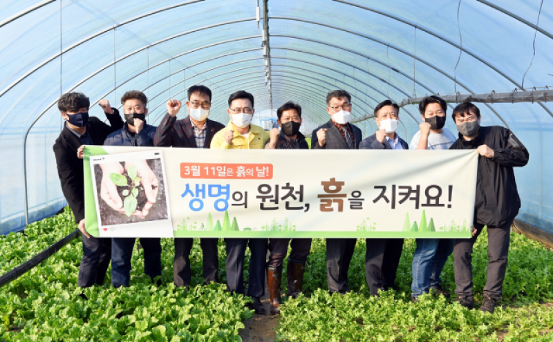

인간이란 뜻의 영어 단어 휴먼(human)은 라틴어 호모(homo)를 어원으로 합니다. 호모는 땅을 뜻하는 라틴어 후무스(humus)에서 파생된 단어입니다. 즉 인간은 “땅에서 온 존재”라는 뜻입니다. 인간이라는 말에는 이미 땅을 떠나서 살 수 없다는 뜻이 내포돼 있습니다. 김춘진 aT사장이 국회의원으로서 2013년 ‘흙의 날’ 제정을 대표 발의할 때에도 인류의 기원, 생명의 원천으로서 흙의 상징성을 담고자 했습니다. 3월 11일에서 3월은 우주를 구성하는 천(天)·지(地)·인(人) 3원을 뜻하고, 11일은 흙 토(土) 자를 풀어쓴 것입니다.
세계 각국이 앞다투어 제시하고 있는 탄소중립은 지금보다 탄소 배출량을 줄이고 흡수량을 늘려 대기 중 온실가스 순배출량을 ‘0’으로 만드는 것이 목표입니다. 탄소 배출량을 줄이기 위해서는 화석연료 감축, 신재생에너지 확대, 자원 재활용 등 다양한 노력이 요구됩니다. 반면 탄소 흡수량을 늘리기 위한 방법은 상대적으로 단순합니다. 흙이 유일한 답이기 때문입니다.
토양에는 1조5000억t의 유기탄소를 포함해 약 2조5000억t의 탄소가 저장돼 있습니다. 툰드라로 불리는 영구동토층도 1조6000억t 수준의 탄소를 저장하고 있다고 합니다. 토양 속 탄소량이 대기 중 이산화탄소(7500억t)의 5~6배에 이르는 셈입니다. 그러나 탄소를 저장할 수 있는 능력은 토양마다 다릅니다. 유기물과 미생물을 많이 함유한 건강한 흙이 탄소 격리 능력도 높습니다. 세계적 학술지 네이처에 따르면 전 세계 경작지의 탄소 격리 능력은 연간 9억t에서 18억5000만t으로 지역에 따라 2배 이상 차이가 납니다.
대기 중 탄소 농도를 줄이는 데에는 광합성을 통한 식물의 역할이 절대적입니다. 식물이 살 수 있는 기반은 당연히 흙입니다. 지구상의 식물이 보유하고 있는 이산화탄소량은 약 6000억t입니다. 특히 열대지역 해변이나 습지에서 자라는 맹그로브는 같은 면적의 열대우림보다 3~4배나 많은 탄소흡수능력을 가지고 있어 탄소저장고라고 불립니다. 그러나 이런 맹그로브 서식지가 새우 양식장 등으로 바뀌면서 지난 30년간 1만㎢ 이상이 사라졌습니다.
유엔에 따르면 가뭄과 사막화로 인해 손실되는 토양의 면적은 매년 12만㎢가 넘습니다. 1초에 3800m²의 땅이 불모지로 변해가고 있는 것입니다. 유엔식량농업기구는 이미 지구의 토양 33%가 훼손된 상태라고 진단합니다. 이대로 방치하면 토양의 탄소격리능력은 더욱 약화되고, 공기 중으로 배출되는 이산화탄소가 늘어나 지구온난화가 가속화될 것입니다. 기후위기뿐만이 아닙니다. 토양의 지력이 떨어지면 농업 생산성도 하락합니다. 2050년 100억 명 수준으로 늘어나는 인구를 감당하지 못해 식량 위기가 닥칠 것이 자명합니다.
우리나라의 흙은 다른 나라에 비해 유기물 함량률이 낮은 편이어서 특히 지속적인 관리가 중요합니다. 도심에서 흙을 구경하기도 힘든데 어떻게 흙을 관리하느냐고 반문할지도 모르겠습니다. 그러나 흙 살리기는 농업계나 환경보호단체만 할 수 있는 일이 아닙니다. 식생활만 바꿔도 매일 흙 살리기에 동참할 수 있습니다. 저탄소 친환경 농산물로 식단을 꾸리고, 로컬푸드 이용을 늘리며, 버려지는 음식물 쓰레기를 줄이는 것입니다. 친환경 농산물 소비가 늘어나면 화학 비료나 농약을 사용하지 않는 친환경 유기농업의 기반이 확대될 수 있습니다. 지역 농산물인 로컬푸드를 많이 먹으면 물류 이동 거리가 줄어들어 토양 산성화의 원인이 되는 자동차 배기가스를 줄일 수 있습니다. 매 끼니 먹을 만큼만 음식을 조리해 먹으면 토양 오염도 예방할 수 있습니다.
올해 흙의 날을 계기로 우리 흙을 건강하게 지키기 위한 식생활 실천에 나서봅시다. 흙이 없는 세상에는 식물도, 동물도, 인류의 미래도 없습니다.
- aT 한국농수산식품유통공사 김춘진 사장
'22.3.7. 중앙일보 기고문 편집